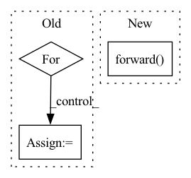

Pattern ID :35282
Before Change
adjacency_matrix: to.Tensor,
batch_size: int) -> to.Tensor:
outputs = to.zeros(batch_size, self.fully_connected_layer_output_size, device=self.device)
for batch in range(batch_size):
outputs[batch] = self.sigmoid(
self.linear(
DataPreprocessor.flatten(
self.encode(node_features[batch], adjacency_matrix[batch]),After Change
adjacency_matrix: to.Tensor,
batch_size: int) -> to.Tensor:
//TODO: Initialize linear weight and bias, as parameters and pass them inside forward to apply bmm()
return rnn_cpp.forward(
self.time_steps,
self.number_of_nodes,
self.number_of_node_features,
batch_size,
self.fully_connected_layer_output_size,
self.w_graph_node_features,
self.w_graph_neighbor_messages,
self.u_graph_neighbor_messages,
self.u_graph_node_features,
node_features,
adjacency_matrix,
self.linear)
In pattern: SUPERPATTERN
Frequency: 3
Non-data size: 3
Instances Fragment ID: 100311946
Project Name: kovanostra/message-passing-neural-network
Commit Name: b189b7e26c368c665abdf78402c378154c3f1f38
Time: 2020-05-30
Author: kovanostra@gmail.com
File Name: message_passing_nn/model/graph_rnn_encoder.py
M Class Name: GraphRNNEncoder
N Class Name: GraphRNNEncoder
M Method Name: forward(4)
N Method Name: forward(4)
M Parent Class: nn.Module
N Parent Class: nn.Module
M File Name: message_passing_nn/model/graph_rnn_encoder.py
N File Name: message_passing_nn/model/graph_rnn_encoder.py
M Start Line: 44
M End Line: 51
N Start Line: 43
N End Line: 55
Before Change
self.writer.add_scalar("value_loss", np.mean(value_loss_buffer), self.train_count)
policy_loss_buffer = []
for _ in range(self.policy_update_iter):
probs = self.policy_net.forward(obs)
probs = probs.gather(1, act).squeeze(1)
ratio = probs / old_probs
surr1 = ratio * adv
surr2 = torch.clamp(ratio, 1. - self.epsilon, 1. + self.epsilon) * adv
policy_loss = - torch.min(surr1, surr2).mean()
policy_loss_buffer.append(policy_loss.item())After Change
policy_loss_buffer = []
for _ in range(self.value_update_iter):
td_target = rew + self.gamma * self.value_net.forward(next_obs) * (1 - don)
delta = td_target - self.value_net.forward( obs)
delta = delta.detach().numpy()
advantage_lst = []
Fragment ID: 100311944
Project Name: deligentfool/policy_based_rl
Commit Name: 3ee3f4f7f6374ecc0a4efef5d67cc2399eab43a4
Time: 2020-05-30
Author: 1027660817@qq.com
File Name: PPO_CLIP/ppo_cartpole.py
M Class Name: ppo_clip
N Class Name: ppo_clip
M Method Name: train(1)
N Method Name: train(1)
M Parent Class: object
N Parent Class: object
M File Name: PPO_CLIP/ppo_cartpole.py
N File Name: PPO_CLIP/ppo_cartpole.py
M Start Line: 121
M End Line: 159
N Start Line: 106
N End Line: 156
Before Change
def sample(self, state):
out = state
for i, layer in enumerate(self.networks):
out = layer(out)
action_mean = out[:self.action_dim]
if self.deterministic:After Change
return action_mean, action_log_std
def sample(self, state):
action_mean, action_log_std = self.forward( state)
if self.deterministic:
action_mean = torch.tanh(action_mean) * self.action_scale + self.action_bias
noise = self.noise.normal_(0., std=0.1) Fragment ID: 100311949
Project Name: x35f/unstable_baselines
Commit Name: e977236fade6fe13bf98ed7225bf269e766b9ecc
Time: 2021-03-09
Author: 1621322691@qq.com
File Name: common/networks.py
M Class Name: PolicyNetwork
N Class Name: PolicyNetwork
M Method Name: sample(2)
N Method Name: sample(2)
M Parent Class: nn.Module
N Parent Class: nn.Module
M File Name: common/networks.py
N File Name: common/networks.py
M Start Line: 132
M End Line: 150
N Start Line: 132
N End Line: 141